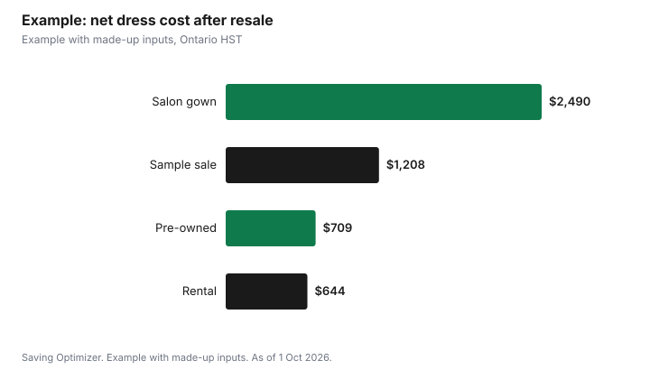

Weddings · Canada
Wedding Dress Costs in Canada: Gowns, Alterations, Buying Online, Renting and Resale

A wedding dress budget in Canada should include the gown, alterations, sales tax, accessories and cleaning, and in Ontario the tax alone is 13% HST on top of both the dress and alterations. Order early enough that a late delivery is not a crisis: Ontario's Consumer Protection Act lets you ask for a refund if an ordered product arrives more than 30 days after the promised delivery date, but that does not help much a week before the wedding. Dresses ordered from outside Canada by mail face duty and GST/HST on the full value once they exceed CAN$20, according to the CBSA. Sample sales, off-the-rack, rental and pre-owned gowns can cut the total sharply, and reselling afterward recovers some cost.
Key takeaways
- Budget dress + alterations + tax + accessories + cleaning.
- Ontario HST is 13% on the dress and on alterations.
- Ordered items must arrive within 30 days of the promised date, or you can ask for a refund in Ontario.
- Dresses mailed from abroad: duty and tax on the full value above CAN$20.
- Second-hand gowns clearly marked as such need not carry fibre labels.
- Example with made-up inputs: four routes to a dress.
What goes into the dress budget
| Item | What to ask |
|---|---|
| Gown | Price, deposit, balance date, delivery date in writing |
| Alterations | Flat package or per item; number of fittings; rush fees |
| Tax | Is tax included? In Ontario, HST is 13% |
| Veil, shoes, undergarments, accessories | Bought separately from the dress |
| Shipping and duty (if ordered from abroad) | Who pays duty, tax and any broker fees |
| Steaming, cleaning, preservation | Before and after the day |
Price tiers and how to pay less
- Designer and bridal salon gowns made to order: the longest lead times. Ask how the size is chosen, whether alterations are included, and the latest order date that still meets your wedding.
- Sample sales: salon floor samples sold at a discount, sometimes with wear; ask whether it is final sale and inspect it closely.
- Off-the-rack: buy and take home; no ordering delay.
- Bridesmaid, evening or white occasion dresses: not marketed as bridal; compare prices.
- Rental: wear once and return; check cleaning and damage fees.
- Pre-owned: through resale sites, consignment shops or marketplaces; try on or confirm measurements before paying.
Alterations budget
Alterations are often the surprise. Common items are hemming, taking in or letting out, adding a bustle, cups, straps or sleeves. Ask for a written quote after the first fitting, the number of fittings included, and the final pickup date. Bring the shoes and undergarments you will wear to every fitting. If you buy a used or rental gown, have a seamstress look at it before you commit, since some changes are hard to reverse.
Delivery dates and your rights in Ontario
Ontario's Consumer Protection Act page says that when you order a product, it must be delivered within 30 days of the promised delivery date or you can ask for a refund; if you choose to keep the late item, you lose the right to a refund. It also says misrepresentation, such as stating a product is a certain grade, style, model or quality when it is not, lets you withdraw from the contract within one year. The cooling-off periods in the Act apply only to specific contracts such as door-to-door sales and gym memberships, so a bridal salon order is governed by its contract terms. Get the style number, colour, size, price and promised delivery date written on the receipt.
Ordering from abroad
The CBSA says that under the Postal Imports Remission Order, items mailed to you worth CAN$20 or less are free of duty and tax, and items worth more are subject to the applicable duty, GST or HST and any PST on the full value. Duty rates are set by the Department of Finance and vary by trade agreement and origin. Before ordering a dress from an overseas site, ask who pays duty and tax, what the return policy is for an imported item, and how long shipping takes. Factor in the risk that a dress may not match the photos and that returning it internationally can be slow and costly.
Labels: new and second-hand
The Competition Bureau's textile labelling guide says new consumer textile articles sold in Canada must carry a label with fibre content and dealer identity. Care instructions are not mandatory, but if given they must not be false or misleading. Articles clearly identified as second-hand by a label, sign or mark do not require labelling. When buying pre-owned, ask the seller for the original label or brand so you know the fabric before cleaning.
Timeline
Work backward from the wedding date. Leave room for the promised delivery date, a possible delay, two or three fittings spaced a few weeks apart, and a final pickup at least a week before the day. Off-the-rack, rental and pre-owned dresses skip the ordering wait, which helps when the engagement is short. Put fitting dates in the same calendar as your other vendor deadlines.
Rent or pre-owned
| Rental | Pre-owned | |
|---|---|---|
| Upfront cost | Lower | Lower than new |
| Alterations | Limited, often not permanent | Allowed |
| Keep it | No | Yes |
| Risk | Damage or cleaning fees | Condition and fit |
| Resale later | No | Yes |
Resale and tax
Reselling recovers part of the cost. Have the dress cleaned, photograph it well, list the designer, style, size and alterations, and price it against current listings. A wedding dress is personal-use property; the CRA's capital gains guide says losses on personal-use property are generally not deductible, so selling at a loss has no tax effect.
Example with made-up inputs
These numbers are an example with made-up inputs, apart from Ontario's 13% HST. Route A, a salon gown at $2,400 with $600 alterations: $3,000 plus $390 HST = $3,390, then resold for a made-up $900, net $2,490. Route B, a sample-sale gown at $1,100 with $500 alterations: $1,808 with HST, resold for $600, net $1,208. Route C, a rental at $450 with $120 for minor fittings: $644.10 with HST, net $644.10. Route D, a pre-owned dress from a private seller at $700 with no HST and $450 in alterations plus $58.50 HST on the alterations: $1,208.50, resold for $500, net $708.50.
| Route | Total paid | Resale | Net cost |
|---|---|---|---|
| Salon gown | $3,390.00 | $900 | $2,490.00 |
| Sample sale | $1,808.00 | $600 | $1,208.00 |
| Rental | $644.10 | $0 | $644.10 |
| Pre-owned | $1,208.50 | $500 | $708.50 |

Common mistakes
- Forgetting HST on alterations.
- Ordering too late for delivery delays.
- Accepting a delivery date that is not in writing.
- Buying from abroad without checking duty and returns.
- Not cleaning the dress before resale.
Related: formal outfits on a budget and 2027 wedding budget.
Sources
- Government of Ontario, Your rights under the Consumer Protection Act, ontario.ca, as of 1 Oct 2026.
- Canada Border Services Agency, Importing by mail or courier: determining duty and taxes owed, as of 1 Oct 2026.
- Competition Bureau Canada, Guide to the Textile Labelling and Advertising Regulations, as of 1 Oct 2026.
- Canada Revenue Agency, GST/HST rates; Guide T4037 Capital Gains (personal-use property), canada.ca, as of 1 Oct 2026.
- Dress, alteration and resale amounts in the example are made-up inputs.
Frequently asked questions
Is HST charged on wedding dress alterations in Ontario?
Ontario's HST rate is 13%. Ask whether the seamstress charges it and whether quotes include tax.
What if my wedding dress arrives late?
Ontario's Consumer Protection Act says an ordered product must be delivered within 30 days of the promised date or you can ask for a refund. Keeping the late item loses that right.
Do I pay duty on a wedding dress ordered from overseas?
The CBSA says mailed items worth more than CAN$20 are subject to duty, GST or HST and any PST on the full value.
Can I cancel a bridal salon order?
Cooling-off periods do not apply to ordinary retail orders in Ontario, so the contract terms govern. Misrepresentation allows withdrawal within one year.
Do second-hand dresses need fibre labels?
No, if clearly identified as second-hand, according to the Competition Bureau's textile labelling guide.
Is money from selling my wedding dress taxable?
A dress is personal-use property, and the CRA says losses on personal-use property generally are not deductible.
Researched and drafted with AI assistance and fact-checked against official Canadian sources. How we create content.
Disclosure: Saving Optimizer may earn a commission if a partner link is added later. No partnership is claimed on this page. Education only.